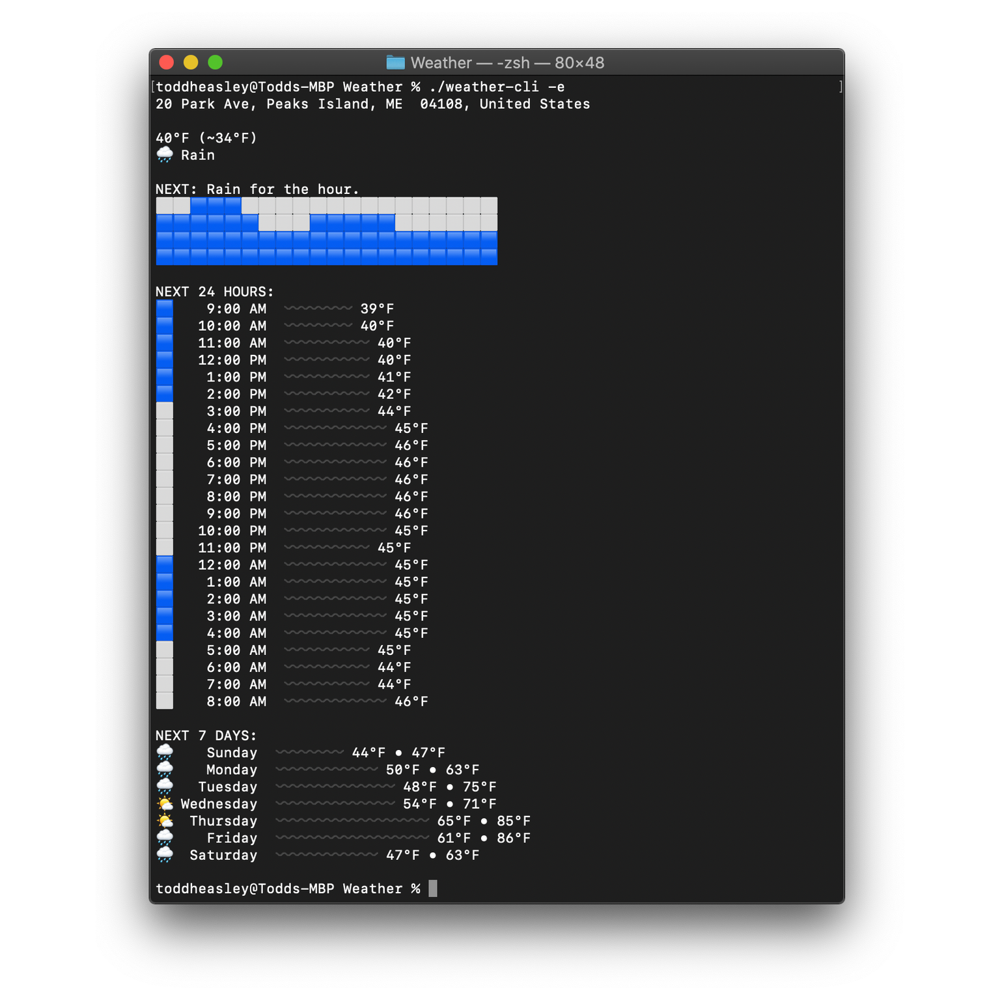
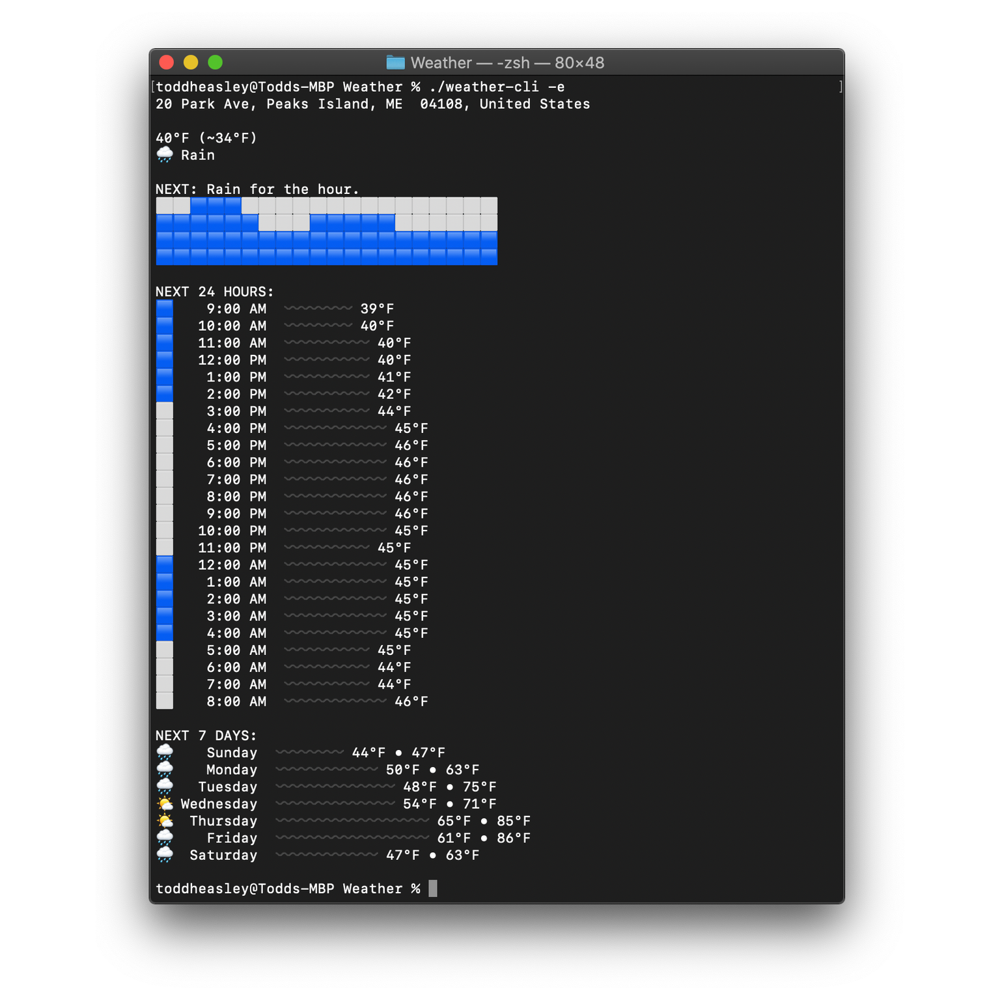

Portfolio
Apps, etc. for Apple platforms


  Dark Sky Weather
 Dark Sky Weather
iOS/watchOS app and command-line interface


 Big Cartel
Big Cartel
iOS/watchOS app


 Urban Outfitters
Urban Outfitters
iOS app and music streaming platform

Resume
Open source projects from
github.com/toddheasley:
Boats
macOS/iOS/watchOS ferry schedules

Mixtapes
macOS podcast publisher
Weather
Dark Sky CLI and Swift SDK
Zxcvbn
Swift/SwiftUI port of Dropbox Zxcvbn